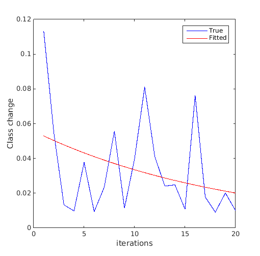
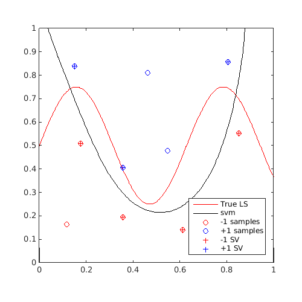
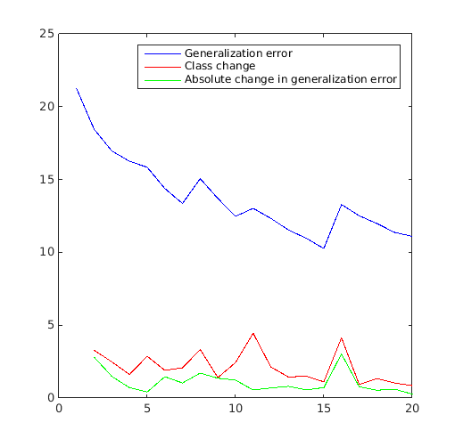
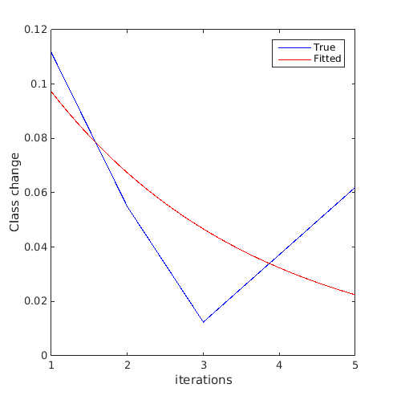
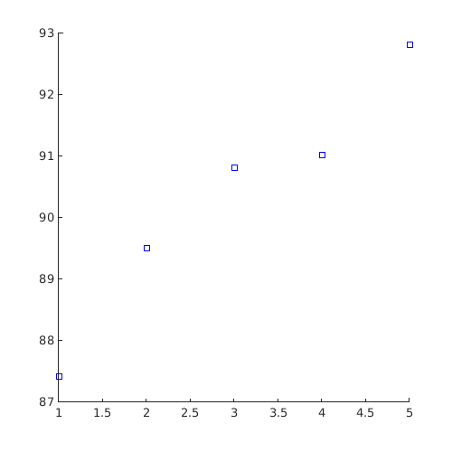

Examples / Adaptive sampling / edsd
This file is a complete demo of the capability of the |edsd|function from the CODES toolbox.
Contents
Documentation
The documentation for the edsd function can be found here.
Set rng
Set random number generator seed:
rng(0)
Simple example
Define a simple sinusoidal problem:
f=@(x)x(:,2)-sin(10*x(:,1))/4-0.5; x=CODES.sampling.cvt(10,2); y=f(x);
Train an SVM and perform edsd while watching the convergence plot:
svm=CODES.fit.svm(x,y,'UseParallel',true); svm_col=CODES.sampling.edsd(f,svm,[0 0],[1 1],'iter_max',20,'plot_conv',true,'display_edsd',false);
Plot first and last contour:
[X,Y]=meshgrid(linspace(0,1,100)); Z=reshape(f([X(:) Y(:)]),100,100); figure('Position',[200 200 500 500]) contour(X,Y,Z,[0 0],'r') hold on svm_col{1}.isoplot('lb',[0 0],'ub',[1 1],'prev_leg',{'True LS'}) axis square figure('Position',[200 200 500 500]) contour(X,Y,Z,[0 0],'r') hold on svm_col{end}.isoplot('lb',[0 0],'ub',[1 1],'prev_leg',{'True LS'}) axis square

A video of this sequential update can be found here.
Obtain classification error statistics
Compare the relative change of class, used as a convergence metric in Basudhar and Missoum (2008), to the generalization error:
error_gen=zeros(size(svm_col,1),1); class_change=zeros(size(svm_col,1)-1,1); for i=1:size(svm_col,1) error_gen(i,:)=svm_col{i}.me([X(:) Y(:)],Z(:)); if i>1 class_change(i-1,:)=svm_col{i}.class_change(svm_col{i-1},[X(:) Y(:)]); end end figure('Position',[200 200 500 500]) plot(1:size(svm_col,1),error_gen(:,1),'b-') hold on plot(2:size(svm_col,1),class_change(:,1),'r-') plot(2:size(svm_col,1),abs(diff(error_gen(:,1))),'g-') legend('Generalization error','Class change','Absolute change in generalization error')
Plot functions
Perform a simple EDSD and plot AUC on a test set:
f=@(x)x(:,2)-sin(10*x(:,1))/4-0.5; x=CODES.sampling.cvt(10,2); y=f(x); x_t=rand(1e4,2); y_t=f(x_t); plot_auc=@(svm,iter)plot(iter,svm.auc(x_t,y_t),'bs'); svm=CODES.fit.svm(x,y,'UseParallel',true); [~]=CODES.sampling.edsd(f,svm,[0 0],[1 1],'iter_max',5,'plot_conv',true,'plotfcn',plot_auc);
EDSD: iteration 1 out of 5 is done EDSD: iteration 2 out of 5 is done EDSD: iteration 3 out of 5 is done EDSD: iteration 4 out of 5 is done EDSD: iteration 5 out of 5 is done EDSD: Stopped because maximum number of iteration was reached 
Obtain extra outputs from the function
Consider a function that returns other information than just the performance. For example, consider a dummy function returning 3 random numbers for each sample calculated.
f=@(x)deal(x(:,2)-sin(10*x(:,1))/4-0.5,num2cell(rand(size(x,1),3))); x=CODES.sampling.cvt(10,2); [y,extra_outputs]=f(x); svm=CODES.fit.svm(x,y,'UseParallel',true); [svm_col,extras]=CODES.sampling.edsd(f,svm,[0 0],[1 1],'iter_max',5,'extra_output',true); disp([svm_col{end}.X [cell2mat(extra_outputs);cell2mat(extras)]])
EDSD: iteration 1 out of 5 is done
EDSD: iteration 2 out of 5 is done
EDSD: iteration 3 out of 5 is done
EDSD: iteration 4 out of 5 is done
EDSD: iteration 5 out of 5 is done
EDSD: Stopped because maximum number of iteration was reached
0.1176 0.1648 0.8440 0.3873 0.1000
0.5469 0.4778 0.5728 0.4732 0.1202
0.4615 0.8109 0.5479 0.9344 0.3501
0.8679 0.1976 0.1869 0.3405 0.5470
0.1765 0.5094 0.2816 0.1760 0.1172
0.8050 0.8568 0.5348 0.3591 0.4756
0.3577 0.1945 0.9662 0.8280 0.1733
0.8519 0.5529 0.1612 0.1190 0.2818
0.1510 0.8399 0.4978 0.1914 0.5873
0.6110 0.1414 0.2211 0.3812 0.3221
0.3560 0.4057 0.3206 0.6285 0.2456
0.7032 0.3374 0.7859 0.4738 0.7413
-0.0000 0.9296 0.7991 0.9546 0.2973
0.1404 0.6734 0.9947 0.3241 0.0340
0.9032 1.0000 0.8030 0.9237 0.7396
References
- Basudhar and Missoum (2008): Basudhar A., Missoum S., (2008) Adaptive explicit decision functions for probabilistic design and optimization using support vector machines. Computers & Structures 86(19):1904-1917 - DOI
Copyright © 2015 Computational Optimal Design of Engineering Systems (CODES) Laboratory. University of Arizona.
|
|
Computational Optimal Design of Engineering Systems |

|